一頭黑捲髮，內雙鳳眼，190 公分的纖瘦身材，他是加拿大、韓國的混血男模 Mathieu Simoneau。一季時裝周（保守估計）會走 20 場以上的國際大秀，奔波全球各大城市，2019 年曾是走秀排名前 3 多的男模。
Mathieu 17 歲在多倫多 Veld 音樂節中被經紀公司挖掘出道，剛踏進模特兒圈就被 Raf Simons 的選角導演相中，出道作就是 Calvin Klein by Raf Simons 的專屬模特兒。
近幾季受疫情影響，這位工作量驟減的 20 歲模特兒開始在抖音分享其走秀心情。例如走 Virgil Abloh 的 LV 首秀，他冰冷表情下的 OS 竟是：「我聽說 Kanye 就在前排，但我褲子快掉了…..」；在 Valentino 的早秋東京大秀上，他心想：「媽的我還在時差中」。一系列「我走秀時在想什麼」的影片，讓他在抖音累積逾 10 萬粉絲，上百萬觀看數，更登上中國、英國各家媒體。本次，我們有幸透過社群訪問到 Mathieu 本人，聽他訴說現役國際時裝模特兒的生存之道與和 Virgil 等人合作的過程。
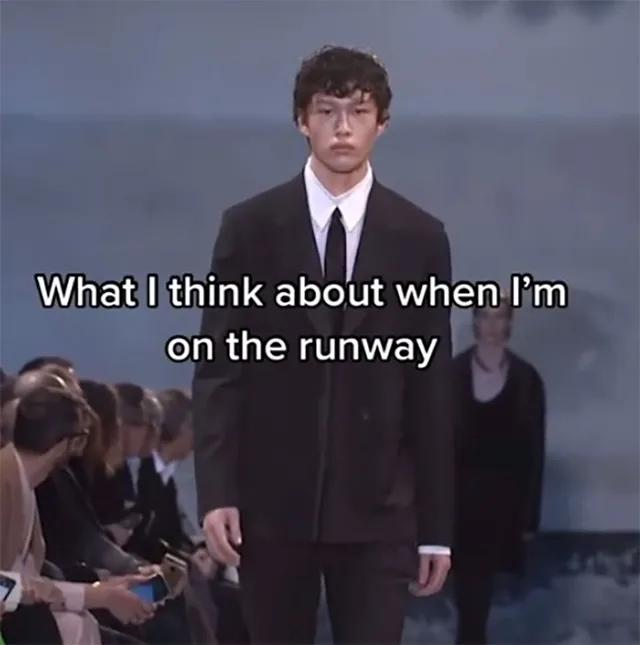
「我走秀時在想什麼」
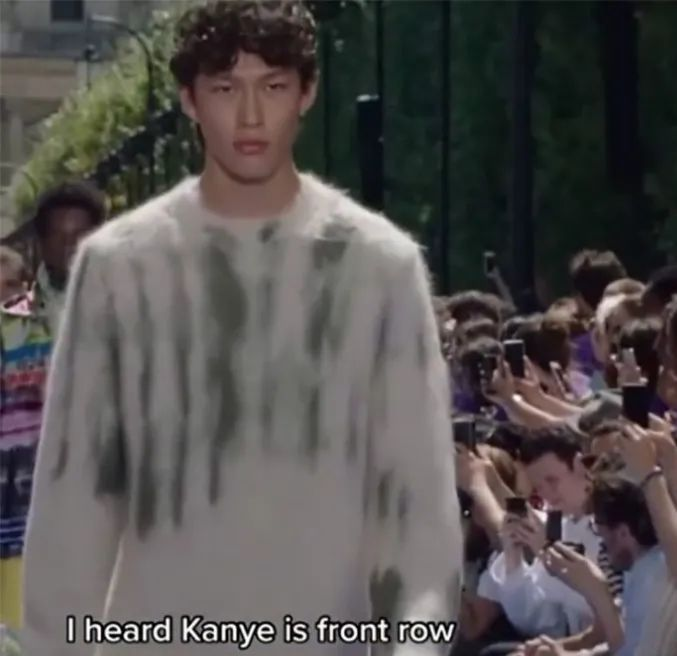
「聽說 Kanye 就坐在前排」
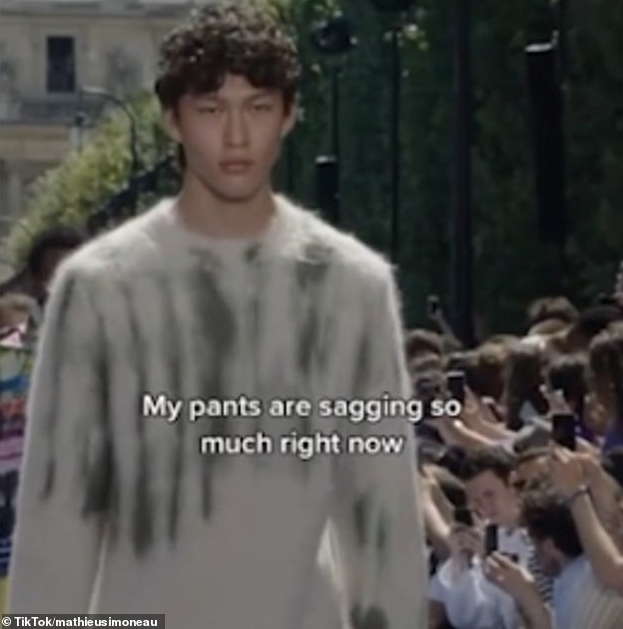
「但我的褲子現在快掉啦」
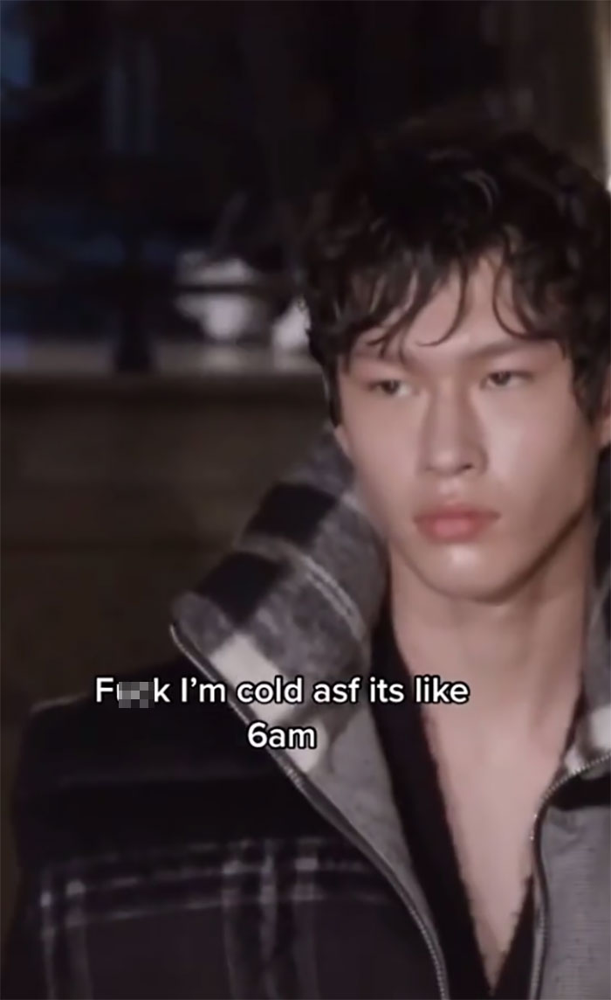
「真他媽的超冷，跟清晨 6 點一樣」
：請簡單自我介紹，何時開始走秀？
「嗨，我是 Mathieu，從 3 年前（17 歲）的 2018 秋冬紐約時裝周開始當模特兒。最初是以 Calvin Klein（by Raf Simons）專屬模特兒出道，除了走秀也拍攝當季廣告，那所有經驗都是我的第一次，是我第一份正式工作。」
「我在加拿大出生，最近剛滿 20 歲，現在就讀多倫多大學。我其實是韓國、加拿大混血，但從來沒去過韓國。」
：怎會想在 tiktok 分享走秀的心情？
「疫情剛爆發時，我就經常關在家滑抖音，我發覺 Instagram 和 YouTube 明明有很多模特兒的經驗談，可是抖音上卻寥寥無幾，所以我決定嘗試看看。」
「我第一則抖音爛到不行，100 觀看數都不到（笑），後來我開始思索大家對什麼內容有興趣、想知道哪些有關模特兒的事。有人覺得 model 從來不笑這件事很搞笑，於是我就把我走秀時的內心話當成素材，沒想到引起越來越多人關注。」
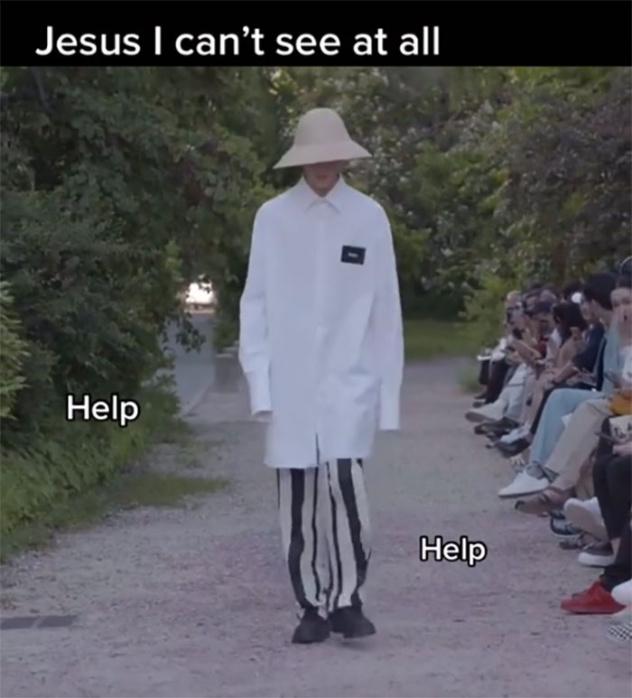
「老天我真的什麼也看不到，誰來救我！」
：所以模特兒為何總是臭臉？
「因為我們就是很不爽啊，沒有啦，開玩笑的。」
「主要原因是多數高端精品希望焦點能集中在服裝，而不是模特兒；此外，多數時裝秀的氛圍比較嚴肅，笑容就不適合。我曾遇過設計師讓模特兒微笑，我才發現在伸展台上笑比不笑更難。
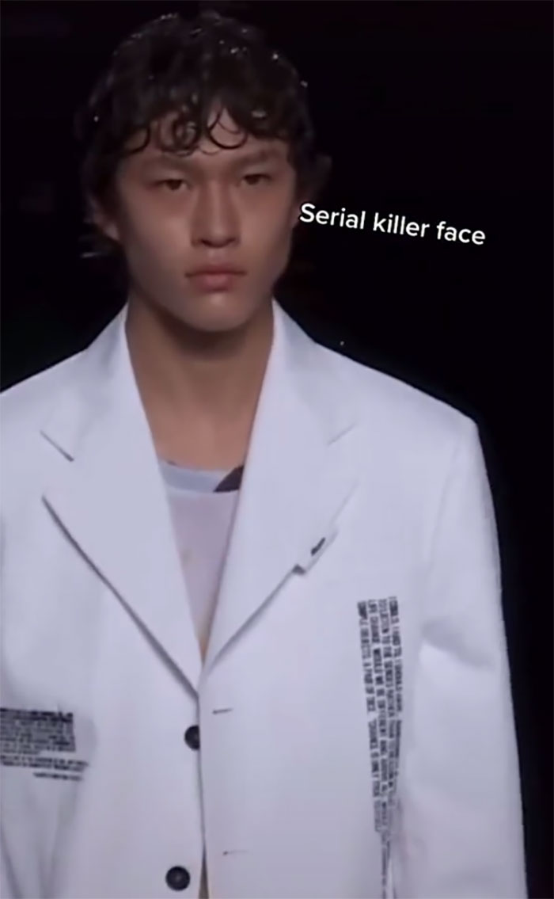
「連環殺人魔表情」
：面對模特兒如此競爭、嚴苛的環境，你怎麼面對？
「真的非常嚴峻且競爭者太多太多了，有時候我沒工作時打開社群，就會有種『全世界除了我，其他所有人有工作』的焦慮感。」
「Model 的外表就是決定你有沒有工作的關鍵，這嚴重影響大家的心理健康。 導致你一旦沒有被選上，就會陷入自己長得不好看的想法中。」
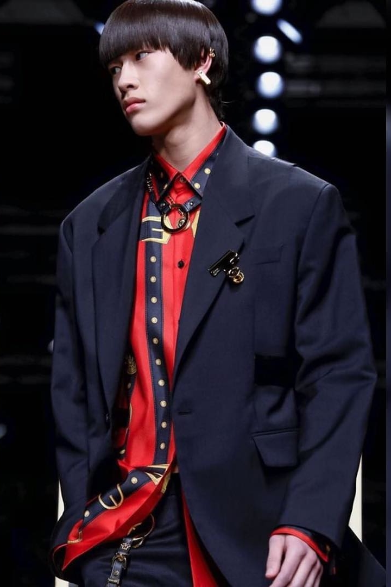
「不過我不厭倦當模特兒，我依舊對時裝秀感到興奮。即使你前天忙到凌晨兩點才睡，當天要五點起床，但大秀開始前就像有一百萬件事等著我去做一樣，我很享受那股興奮與激動。」
：以你的 casting 經驗來說， 可否分享各設計師分別 偏好怎樣的模特兒？
「我經驗還沒豐富到可以說出各品牌 casting 的偏好，偏好是選角導演不會說出口但絕對存在的，例如某些選角導演就是喜歡長髮或捲髮，討厭或喜歡混血臉孔，每個導演喜好都不同。我只能提供最基礎的男模條件：身高至少 180 以上到 190 公分，身形 skinny，這是 high fashion 最喜歡的樣子。」
：亞裔臉孔近年是否更受歡迎？
. 「近年，時尚模特兒的多元性很顯著地提升了，確實亞洲臉孔的能見度也更高。」 「但當然還是有些毫不在意模特兒多元性的品牌，或是意思意思選幾個非白人模特兒充場面的，這還是屢見不鮮。」 「不過我很幸運是，剛好在亞裔開始受待見的時期踏進這產業，而時尚界也有很多優秀的亞裔人士，包括選角導演、模特兒或設計師等。」
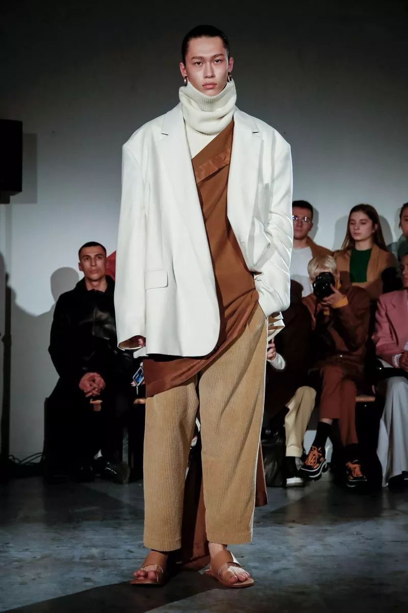
：受疫情影響，多數時裝秀取消對你有何影響？
「就我個人而言，已連續兩季沒有參加時裝週了。目前，我的工作必須從伸展台轉向平面模特兒，這對我來說也算是成長，畢竟在過去的一年中，我參與很多很棒的雜誌大片和形象廣告，這使我的模特兒專業有所進步。」
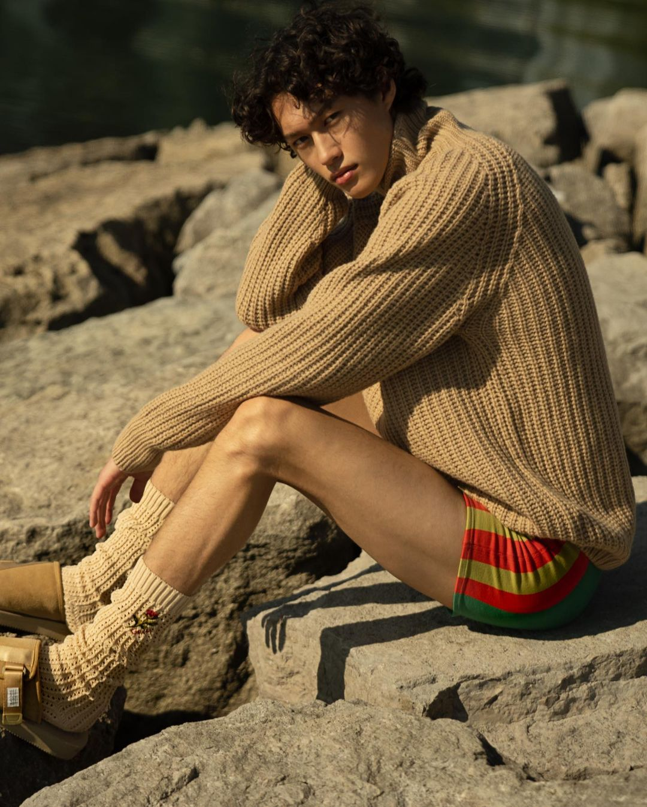
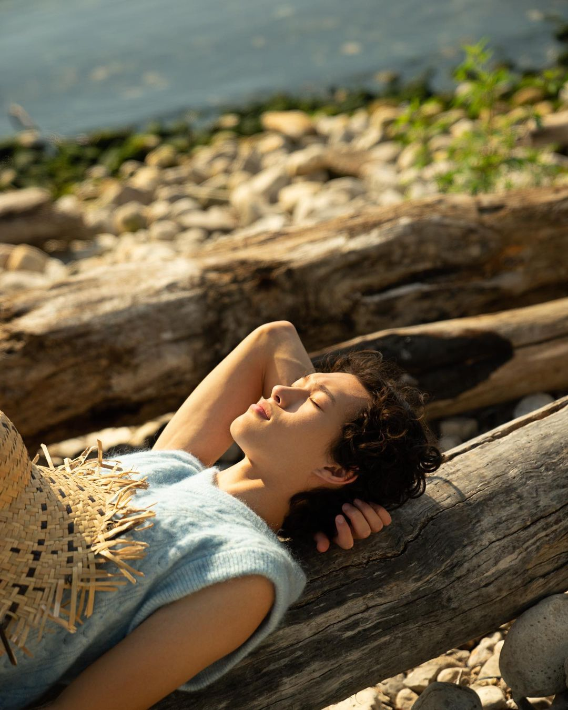
：你曾登上 Virgil 的 LV 首秀， 他私下怎麼樣？
「他非常溫和且親切，秀前他會在後台親自幫模特兒調整服裝、拍照，是非常 nice 的人。」
：可否說說通常一場 LV 秀， 事前需要做什麼？ 一整天模特兒的流程為何？
「就 Louis Vuitton 來說，主要分三階段：徵選、試衣、上秀。」 「基本上 LV 不會負擔模特兒的住宿費，所有品牌都這樣，只要在時裝周期間，（一般）模特兒的住宿和機票都是自付或經紀公司出錢。」 「當天開秀是上午，我們凌晨就開始妝髮、彩排，等待的時間很長，所以模特兒待機時就在後台到處晃、到處玩，因為實際上頻繁在走國際時裝秀的男模大概就 300 個人，所以我們太常遇到彼此，自然而然大家就打成一片，變成朋友。LV 我記得共彩排兩次，彩排時明星模特兒都不會來，所以真正上秀時，你會發現他們可能走超級慢之類的，這就得當場自己看著辦。」
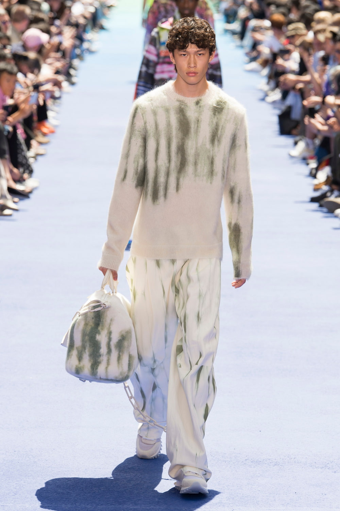那場秀前排有 Kanye West、Rihanna 等眾多明星 ，你感覺如何？
「其實我根本沒看到他們，我走秀時只能直直盯著前方，所以你永遠不會知道前排坐著誰，每次只能走回後台才聽到『剛誰誰誰有來』的消息。」 「我也曾在後台遇過明星，像 ASAP Rocky 在 Raf Simons 大秀時就來後台看我穿的衣服，很酷。」
：你也曾跟 Bella Hadid 等超模一起走秀， 他們跟一般模特兒 的待遇有何不同？
「當然，品牌對他們的待遇會完全不同，有單獨的更衣室、彩妝師，創意總監親自來歡迎他們，攝影師也在他們身上花更多時間。這就是明星模特兒的工作，畢竟引起矚目正是請他們來走秀的目的之一。」
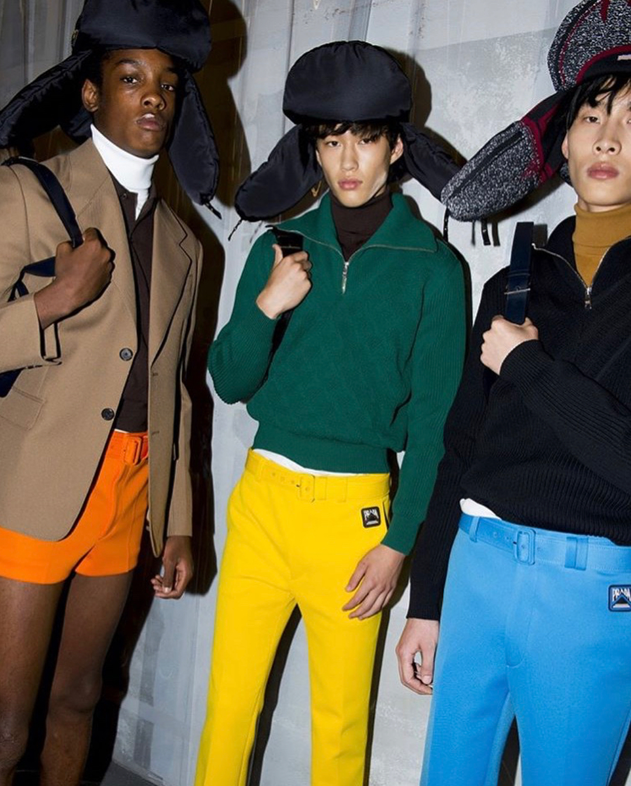
：時裝周 Model 下秀後的休閒？通常都去哪？
「真的沒在幹嘛，一群模特兒就在街上亂晃、溜滑板。」
：未來想和哪位設計師/品牌合作？
「我很想幫 Dior、Ralph Lauren、Tom Ford、Bottega、Fendi 等品牌走秀，這些都是我從未合作過的品牌，當然也想再跟那些我走過的品牌合作一次